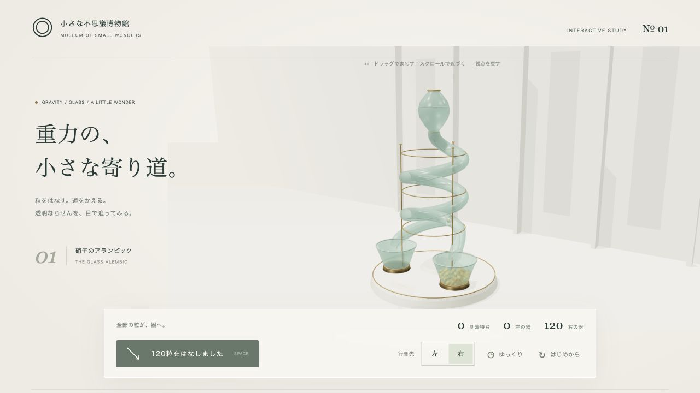
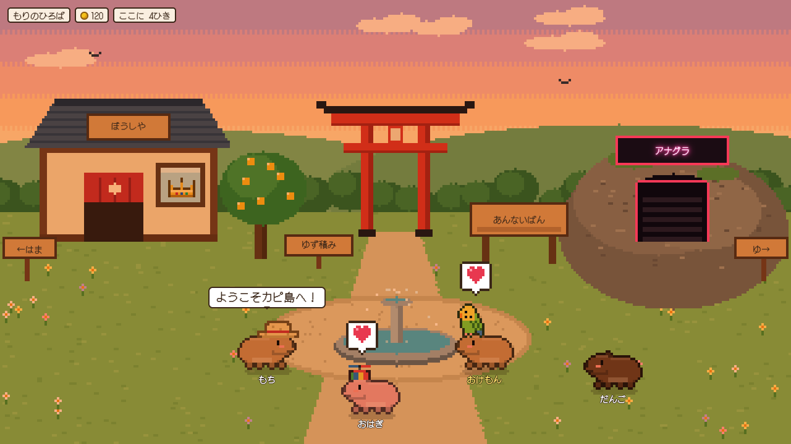
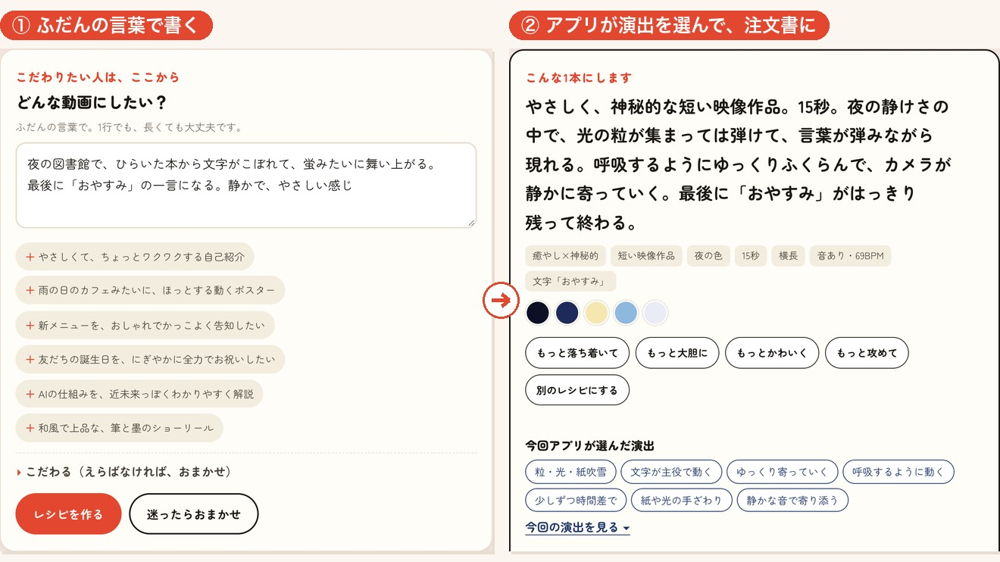
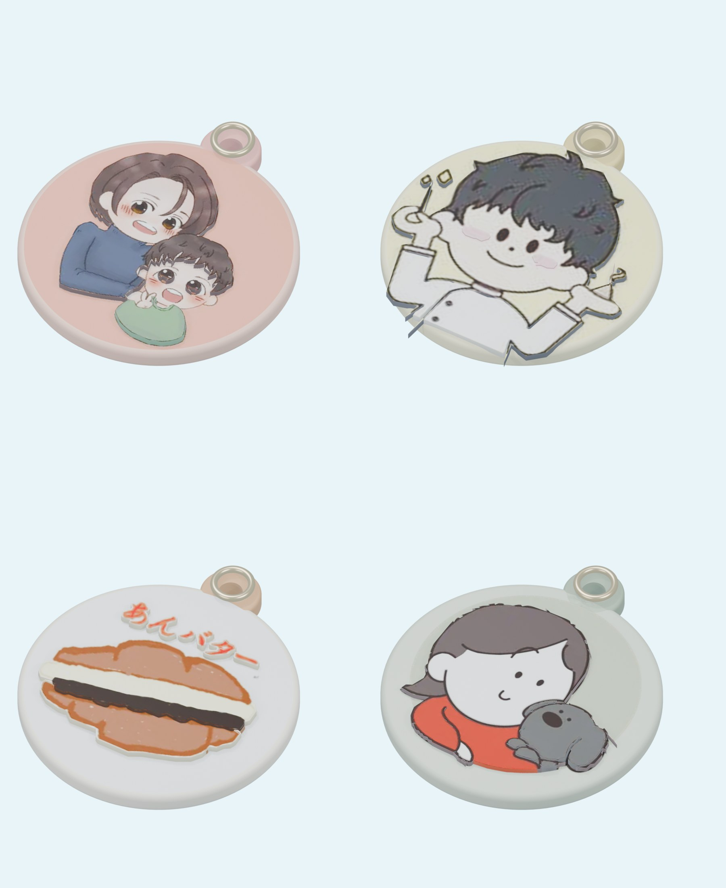

リベシティ「AI初心者サポートチャット🔰」
2026年9月27日(日) 21:00–21:30
おけもん主催
「聞くだけ参加OK・出入り自由」を最初に伝える。目安0:00-0:01
朝型と夜型の生活リズムの違いに軽く触れて共感を取る。目安0:01-0:03
今週のニュース①
夜組が嬉しいところ：エフォート設定は「medium」から測り直す。以前の「よく考えて」の指示はもう不要。
出典の動画名を口頭で伝える。詳細はmizuno-ai-news.pages.devにまとまっていると案内。目安0:03-0:08
今週のニュース②
夜組が嬉しいところ：「賢いAIに全部任せる」じゃなく「小さい判断だけ超高速に任せる」という新しい役割分担が生まれた。
Jevは判定専用でDOOMやマリオを遊ばせる遊びも世界で流行っていることに軽く触れる。目安0:08-0:13
今週のニュース③
夜組が嬉しいところ：まだ受け取ってない人は、10/7までにボタンを押すだけで得。
期限を強調。今夜のうちにメモしてもらう。目安0:13-0:18
今夜これだけやっておけば損しない、と伝える。目安0:18-0:20
おけもんの活用事例①

依頼は「クオリティーにもこだわりつつ」の一言だけ。AstraとThree.jsで、卵型の貯留槽と透明ならせんを、実際の物理演算込みで自作した。
実際に画面共有で少し操作して見せる。目安0:20-0:22
おけもんの活用事例②

海外の作品を見て「TTPして」の一言だけ。本家コードは見ず、須磨の浜・ゆず湯の日本版に。44項目中、初回で41通過。
Opus 5.5が一発でどこまで書けるかの驚きを伝える。目安0:22-0:24
おけもんの活用事例③

指示は基本の2行だけ。Claude CodeのOpus 5.5が約46分・質問なしで「FROM NOTHING」42秒を完成させた。
「これ以上シンプルにならない」という驚きを伝える。目安0:24-0:26
おけもんの活用事例④

元アイコン4枚から、AstraがBlenderで立体モデリング。印刷用データ（STL）まで自動で書き出した。
2026-09-26制作・実機印刷は未検証
「見た目」で終わらず「物になる」ところが驚きどころ。目安0:26-0:28
今日わからなかったこと、気になったことはこのチャットにどうぞ。おけもんも一緒に遊びます。
朝もく会・YouTube・水曜ラジオへの導線を口頭でも案内。目安0:28-0:30